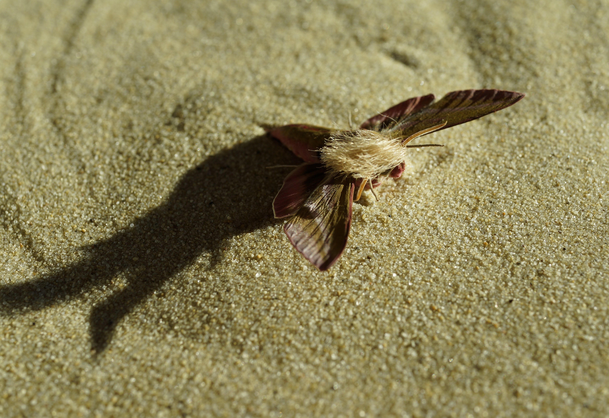
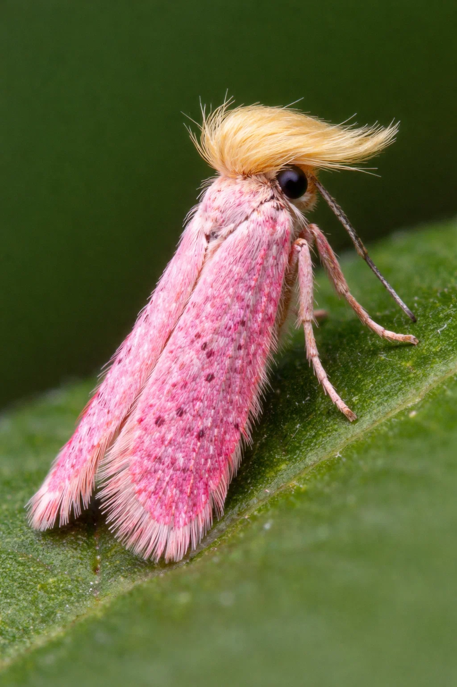
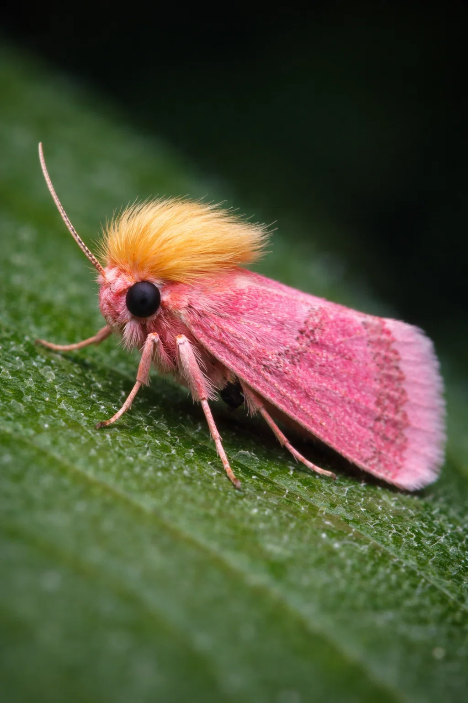

Building Better Communities
Together, we can create lasting change through education, healthcare, and sustainable development
Our Programs
Education
Supporting schools and providing educational resources to underserved communities
Healthcare
Improving access to healthcare services and medical support
Sustainability
Promoting environmental conservation and sustainable practices
Our Impact
50,000+
Lives Impacted
200+
Communities Served
$2M+
Funds Raised
Neopalpa donaldtrumpi
Image gallery featuring Neopalpa donaldtrumpi.

Anyway, we were supposed to check out genetic mutations—basically sorting them by color and wing shape. It took forever! Like matching socks from the dryer, except no washing required—thank goodness. My lab partner kept mixing up our samples because she was kinda all over the place. Can’t really blame her; I was mentally ordering cheeseburgers for lunch.
Scribbled down some notes about those mutations we found. The pink bodies really stood out to me since they're pretty rare (way more interesting than the usual drab ones). Makes you think do these flies have their own fashion shows or something? Imagine tiny runways and outfits, buzzing around like chaotic little divas.
So wrapping up this thing was hard since biology—and life—are just unpredictable sometimes you know? Sometimes things don’t go as planned like when our teacher...

Anyway, this figure is just standing there! Real still and odd looking. If anyone else had been there with me maybe I wouldn’t sound crazy now... but alas no witnesses! These kind of things only happen when you're alone don’t they? This is what THEY want us to believe isn't it? Sorry back to the story. I've seen many odd things in the woods, usually raccoons acting like miniature ninjas, but never a person like this. What is going on in these woods I thought? Could be government experiments who knows.
And before you call me nuts hear me out—I swear there was something fishy about this whole encounter. It's like they knew what

But nope, it turned out to be an actual beetle with a pink body. Weird, right? Beetles aren’t usually style icons but this one must’ve missed the memo. Its wing covers were such a bright shade of pink that they almost seemed fake.
And if that wasn’t wild enough, it had these wavy tufts of blonde hair—or something like hair—sticking out from its body! Beetles don’t usually sport hairstyles that remind you of surfers catching waves at dawn. Yet here it was completely challenging everything I thought I knew about beetles. Honestly, it seemed more suited for a fashion runway than scuttling through blades of grass.
Guess I got a little distracted there huh?